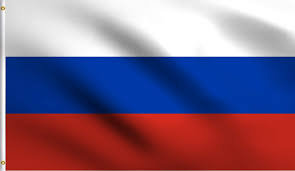

ცნობილი ქართული კერძები და მათი რეცეპტები.
საქართველო ცნობილია გემრიელი საჭმლით. საქართველოში მოგზაურობისას შეამჩნევთ, რომ გემო და არომატი განსხვავდება. საქართველოს ყველა რეგიონს ტრადიციული კერძის საკუთარი ვარიანტი აქვს.
ქართული საჭმელი ნებისმიერი გემოვნების ადამიანისთვისაა მისაღები. არ აქვს იმას მნიშვნელობა ჭამთ თუ არა ხორცს, მშიერი არ დარჩები. ვეგეტარიანელებსაც უამრავი გემრიელი ქართული კერძის გასინჯვა შეუძლიათ.
აქაა ჩვენი ათეული აუცილებლად გასასინჯი ქართული კერძებისა, რომლის გემო არ დაგავიწყდებათ და ადვილად იპოვით ნებისმიერ ქართულ რესტორანში.

პირველი მათგანი ხინკალია, რომელიც წარმოიშვა საქართველოს მთიან რეგიონში. ხინკალი გავს ცომის გუფთას, რომელშიც გვხვდება ან ხორცი, ან ყველი, ან კარტოფილი,ან სოკო. ყველაზე გავრცელებული ვარიანტი ხორცით კეთდება. კარგ ხინკალს შიგნით უნდა ჰქონდეს წვენი. ხინკალს ჭამენ ხელებით, პირველ რიგში პატარაზე უნდა მოკბიჩოთ ცომი და მოხვრიპოთ წვენი, შემდეგ კი შეჭამოთ. ხინკალს გემოვნების მიხედვით ამატებენ შავ პილპილს, ან ძმარს.
